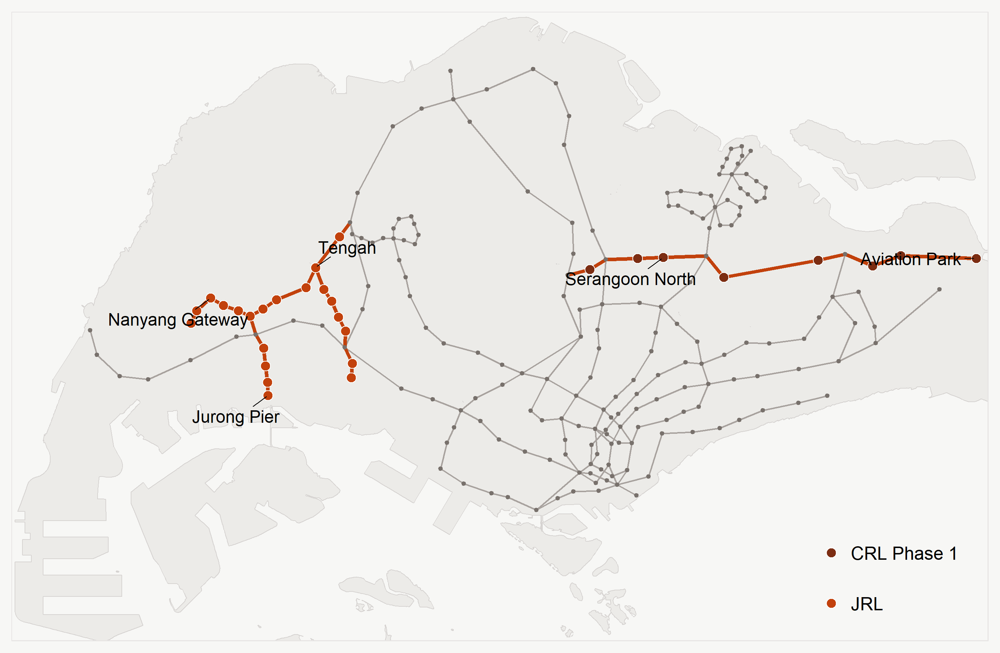
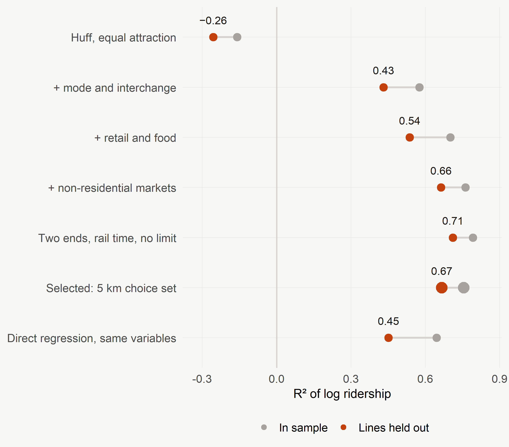
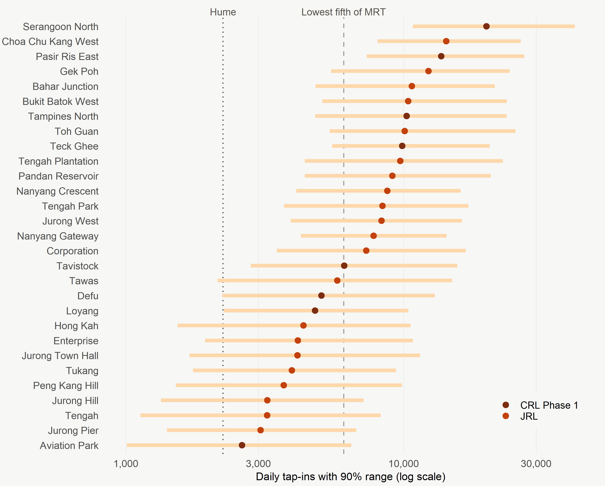
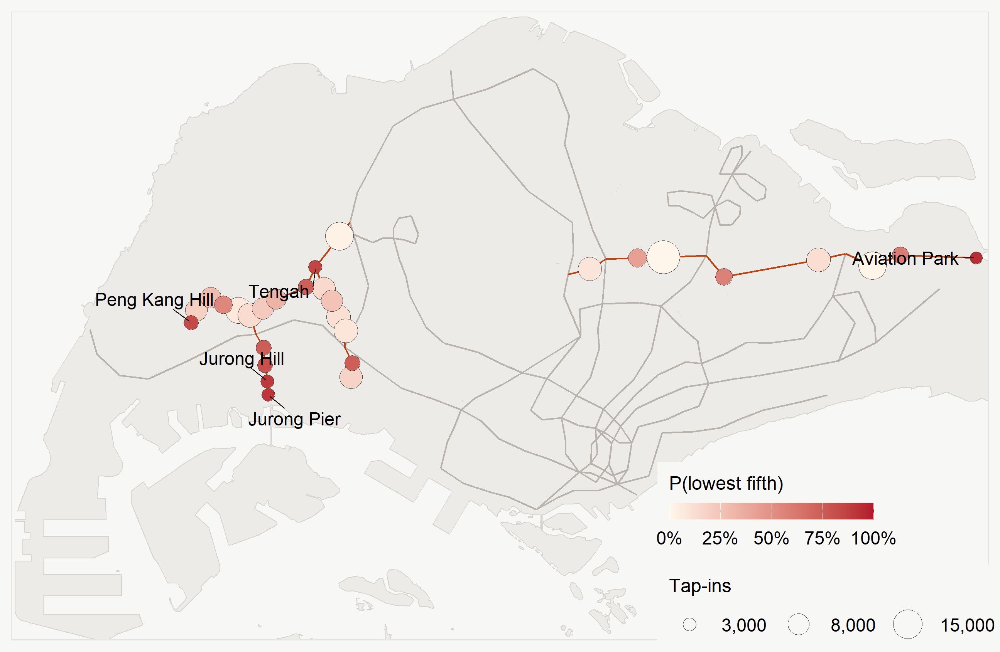
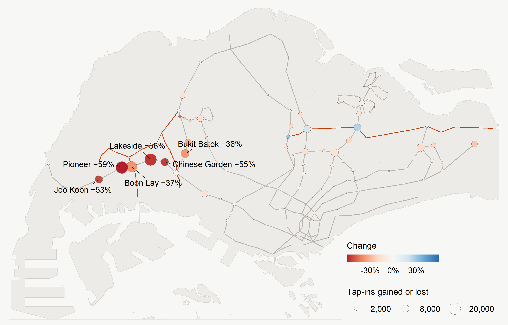
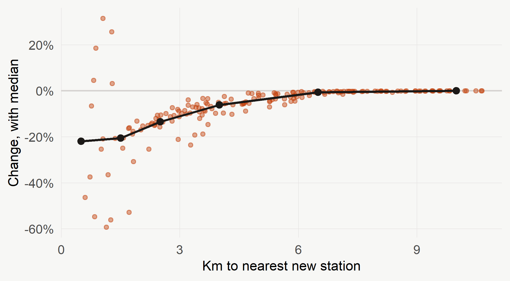
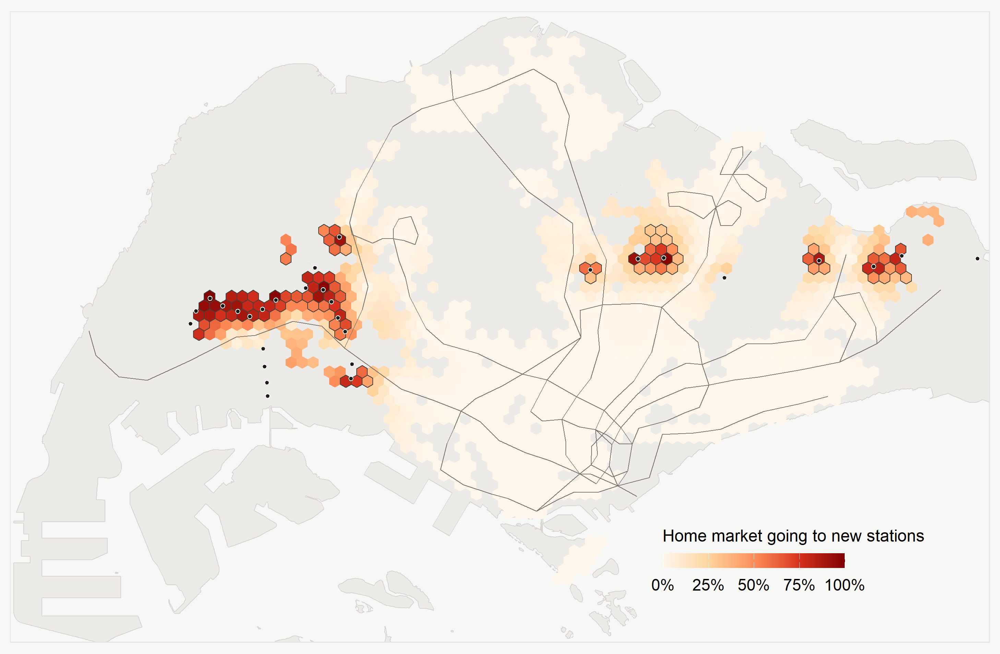
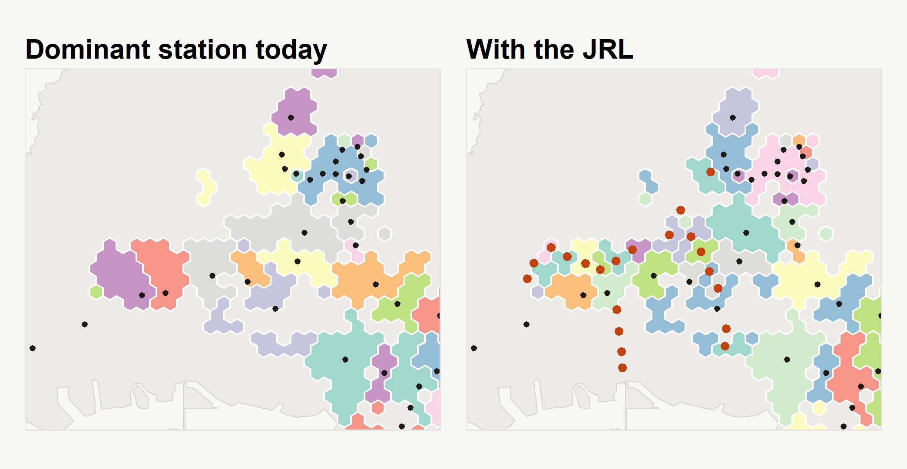
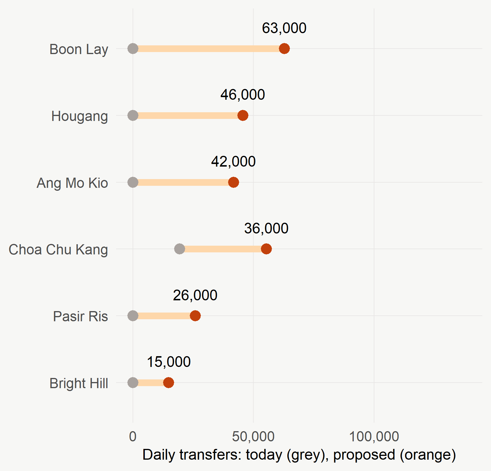
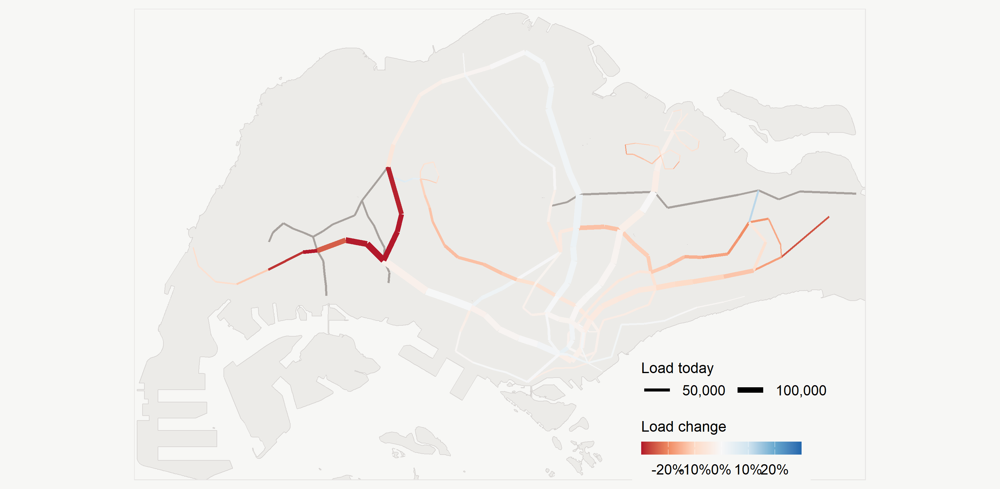

Station ridership and what new lines do to it
Singapore · Jurong Region Line and Cross Island Line Phase 1车站客流，以及新线带来的影响
新加坡 · 裕廊区域线与跨岛线第一期
2026-11-02
EXECUTIVE SUMMARY · TEN SLIDES执行摘要 · 十页
Full detail完整内容
Every number here is computed in the technical report, which documents the data preparation, the methods and their checks, and the code.
这里的每个数字都在技术报告中计算得出，报告记录了数据准备、方法及其检验，以及代码。
01 · CALIBRATE, PREDICT, EVALUATE01 · 校准、预测、评估
RQ1 · CalibrateRQ1 · 校准
How well can a spatial interaction model reproduce ridership, including at stations it never saw, and what makes a station attractive?
空间交互模型能在多大程度上复现客流（包括未见过的车站）？什么让车站具有吸引力？
RQ2 · PredictRQ2 · 预测
What ridership can the Jurong Region Line and Cross Island Line Phase 1 stations expect, and which risk being too quiet?
裕廊区域线与跨岛线第一期车站可望有多少客流？哪些可能过于冷清？
RQ3 · ImpactRQ3 · 影响
How would they change ridership and market areas at stations already open, and how far does the effect reach?
它们将如何改变既有车站的客流与市场区？影响能延伸多远？
0.67 Held-out R² on lines left out of calibration; a direct regression reaches 0.45校准时留出线路上的 R²；直接回归为 0.45
225,000 Tap-ins a day at 29 new access points, on today’s land use29 个新进站点的每日进站量（基于当前土地利用）
−22% Median change within 1 km of a new station, fading to nothing beyond 8 km新站 1 公里内的变化中位数，8 公里外消失
Calibrate校准
Distance alone explains nothing. Mode, interchange status, retail and rail time to the CBD do. Bus stops add nothing.
单靠距离什么也解释不了。起作用的是制式、换乘地位、零售与到 CBD 的轨道时间。公交站数量没有贡献。
Predict预测
Serangoon North leads at about 20,000. Aviation Park, Jurong Pier, Tengah are lowest, near 3,000.
Serangoon North 居首，约 20,000 次。Aviation Park、Jurong Pier、Tengah 最低，约 3,000 次。
Impact影响
Pioneer −59%, Lakeside −56%. Boon Lay’s tap-ins fall, but it gains 63,000 transfers a day.
Pioneer −59%，Lakeside −56%。Boon Lay 进站量下降，却每日增加 63,000 次换乘。
In one line一句话
The new stations fill gaps in a dense network: they shorten access for many residents, draw much of their ridership from stations nearby, and turn one-line stations into busy interchanges.
新站填补了密集网络中的空隙：它们缩短了许多居民的到达距离，客流大多来自附近车站，并使只有一条线路的车站变成繁忙的换乘站。
02 · STUDY AREA AND DATA02 · 研究区与数据

Land mines cleared清除的地雷
Of 36 proposed codes, 7 are existing stations gaining a line, so 29 are new. A new Circle Line stage opened in July, so ridership is August and September only.
36 个拟建代码中，7 个是增加线路的既有车站，所以新站为 29 个。环线新阶段于 7 月开通，所以客流只取 8、9 月。
Ridership: LTA DataMall客流：LTA DataMall
184 open stations, 38 LRT only. 2,942,323 tap-ins a day, weighted as a normal week. Tap-ins exclude transfers; the OD table supplies those later.
184 个开放车站，其中 38 个只有轻轨。每日 2,942,323 次进站，按正常一周加权。进站量不含换乘，换乘之后由 OD 表提供。
Markets: 500 m hexagons市场：500 米六边形
1,801 origins. 4,242,280 residents placed from HDB flat types and SingStat subzones; workplaces, dormitories and points of interest from OpenStreetMap.
1,801 个起点。根据 HDB 户型与 SingStat 小区安置 4,242,280 名居民；工作场所、宿舍与兴趣点来自 OpenStreetMap。
Attraction: within 400 m吸引力：400 米以内
Bus stops, retail, food, LRT or MRT, extra lines, and rail time to the CBD from a graph of the network.
公交站、零售、餐饮、轻轨或地铁、额外线路，以及由铁路网图计算的到 CBD 的轨道时间。
The frames the brief asks for题目要求的数据框
331,384 existing and 383,613 proposed origin-station pairs, plus origins and destinations tables.
既有 331,384 个、拟建 383,613 个起点-车站对，以及起点表与目的地表。
03 · A HUFF MODEL WITH TWO ENDS03 · 两端的 Huff 模型
\[P_{ij} = \frac{A_j\, d_{ij}^{\,\lambda}}{\sum_{k:\, d_{ik}\le 5\,\text{km}} A_k\, d_{ik}^{\,\lambda}}, \qquad A_j = \exp(\mathbf{x}_j'\boldsymbol\beta), \qquad E_j = \sum_i M_i P_{ij}\]
1 · Split the trip1 · 拆分出行
Morning tap-ins and tap-outs divide each station’s ridership into a home end (residents, dormitories) and an activity end (workplaces, points of interest), fitted separately.
早高峰进出站量把每个车站的客流分为居住端（居民、宿舍）与活动端（工作场所、兴趣点），分别拟合。
2 · Calibrate2 · 校准
Squared log error with exact gradients. Attraction variables, the exponent and market weights are estimated, with a 5 km choice set.
以平方对数误差为目标，使用精确梯度。估计吸引力变量、指数与市场权重，选择集为 5 公里。
3 · Test against nulls3 · 对照基准模型
A ladder from nearest station to the final model; leave-one-line-out on nine lines; a permutation null; a low-ridership AUC.
从最近车站到最终模型的阶梯；九条线路的逐线留出；置换基准；低客流 AUC。
4 · Forecast4 · 预测
Existing stations pivot on what they carry; new stations come from the model. 300 bootstrap draws, with noise from hold-out errors.
既有车站以实际客流为转折基准；新站来自模型。300 次自助抽样，噪声来自留出误差。
Why not huff.fit()为何不用 huff.fit()
Exact calibration reproduces every station and turns unexplained ridership into reach: Kranji’s mean catchment triples. The matrix form was checked against MCI::huff.shares(), differing by at most 2e-11 tap-ins. Value-added: an outside option and an MCI on OD shares (slide 9).
精确校准能复现每个车站，却把未解释的客流变成辐射范围：Kranji 的平均集散范围扩大到三倍。矩阵形式已与 MCI::huff.shares() 对照，差距最多 2e-11 次进站。附加价值：外部选项与基于 OD 份额的 MCI（第 9 页）。
04 · FINDINGS, RQ104 · 发现，研究问题一

What the model says模型说明了什么
The best score was the wrong model分数最高的并非正确模型
With no distance limit, hold-out reaches 0.71, but a station 10 km from any new line loses 10%. A 5 km choice set gives back a little fit and removes that.
不限距离时留出分数达 0.71，但距新线 10 公里的车站也损失 10%。5 公里选择集牺牲少量拟合，消除了这一点。
Checks检验
Permutation p = 0.01. Low-ridership AUC 0.87. Rank correlation 0.86.
置换检验 p = 0.01。低客流 AUC 0.87。秩相关 0.86。
05 · FINDINGS, RQ205 · 发现，研究问题二

225,000 A day in all; simulated 216,000 to 306,000每日合计；模拟范围 216,000 至 306,000
Reading it如何解读
Why the range sits high范围为何偏高
Errors with a long upper tail sum upward, so the simulated total lies mostly above the central estimate.
长上尾的误差相加后偏高，所以模拟总量大多高于中心估计。
06 · FINDINGS, RQ206 · 发现，研究问题二

Tengah at its planned size规划规模下的登加
Adding 41,046 residents lifts Tengah Plantation from 9,700 to 13,700 and Tengah from 3,200 to 5,300. Shops and buses would add more.
增加 41,046 名居民后，Tengah Plantation 从 9,700 升至 13,700，Tengah 从 3,200 升至 5,300。商店与公交还会带来更多。
| Station | Tap-ins | P(< Hume) | P(lowest fifth) |
|---|---|---|---|
| Aviation Park | 2,619 | 37% | 94% |
| Tengah | 3,227 | 28% | 85% |
| Jurong Pier | 3,054 | 26% | 91% |
| Jurong Hill | 3,230 | 24% | 90% |
| Peng Kang Hill | 3,700 | 18% | 83% |
| Hong Kah | 4,358 | 13% | 73% |
The yardsticks标尺
Hume today: 2,239 a day, the last station held back for lack of demand. Lowest fifth of MRT: 6,092. No station is more likely than not to fall below Hume, but 12 of 29 probably land in the lowest fifth.
Hume 目前每日 2,239 次，它是最近一个因需求不足而推迟的车站。地铁最低五分之一界线 6,092 次。没有车站低于 Hume 的概率过半，但 29 个中有 12 个很可能落入最低五分之一。
Risk is more likely understated风险更可能被低估
The model gives Hume 6,400, not 2,239. It overpredicts at the very bottom.
模型给 Hume 的估计是 6,400，而不是 2,239。它在最底部倾向于高估。
07 · FINDINGS, RQ307 · 发现，研究问题三

Two bounds两个界限
Existing stations lose 156,000 to 198,000 tap-ins a day, depending on how much ridership is new (slide 9). Changi Airport’s −25% is an artefact: its riders are not a local market.
既有车站每日损失 156,000 至 198,000 次进站，取决于有多少客流是新增的（第 9 页）。Changi Airport 的 −25% 是人为结果：其乘客不是本地市场。

Interchanges: the sign depends on an assumption换乘站：符号取决于假设
Ang Mo Kio +19% with an interchange uplift, −16% without. Hougang +26% or −12%. Only Boon Lay and Jurong East fall either way. The data cannot settle this.
Ang Mo Kio 有换乘提升时 +19%，没有时 −16%。Hougang 为 +26% 或 −12%。只有 Boon Lay 与 Jurong East 两种情形下都下降。数据无法定论。
Local局部性
81 of 184 stations lose over 5%. Beyond 8 km the median change is zero.
184 个车站中有 81 个损失超过 5%。8 公里以外变化中位数为零。
08 · FINDINGS, RQ308 · 发现，研究问题三

310,000 Residents whose most likely station becomes a new one (outlined)最可能使用的车站变为新站的居民（轮廓线）
74% → 81% Residents within 800 m of a station住在车站 800 米以内的居民

The west contracts西部收缩
Boon Lay’s dominant area loses 38,000 residents, Bukit Gombak 31,000, Lakeside 30,000. Those who stay live nearer: mean distance falls 7% at the median station within 2 km.
Boon Lay 的主导区减少 38,000 名居民，Bukit Gombak 减少 31,000 名，Lakeside 减少 30,000 名。留下的人住得更近：2 公里内车站的平均距离中位数下降 7%。
A boundary hides most of it边界隐藏了大部分变化
172,000 residents live outside the outlines yet send over a third of their market to a new station.
172,000 名居民住在轮廓线之外，却有超过三分之一的市场流向新站。
09 · VALUE-ADDED ANALYSIS09 · 附加价值分析


MCI on OD shares: feeder lines基于 OD 份额的 MCI：接驳线
46% of JRL and 64% of CRL boardings leave the new line. Stations losing tap-ins become the interchanges that carry them on.
裕廊区域线 46%、跨岛线 64% 的上车乘客会离开新线。损失进站量的车站成为继续运送他们的换乘站。
Relief stops at Jurong East缓解止于 Jurong East
Jurong East to Chinese Garden −31%, but Clementi to Jurong East only −2%. Serangoon to Lorong Chuan −13%.
Jurong East 至 Chinese Garden −31%，而 Clementi 至 Jurong East 只有 −2%。Serangoon 至 Lorong Chuan −13%。
Outside option: not identified外部选项：无法识别
The share of home-end riders new to rail can run from 6% to 89% with in-sample fit unchanged. 99% of residents already live within 2 km of a station.
居住端乘客中轨道新用户的比例可在 6% 到 89% 之间变化，而样本内拟合不变。99% 的居民已住在车站 2 公里内。
10 · FOR TRANSPORT PLANNING10 · 对交通规划的意义
Limitations局限
Implications启示
The handout’s wording手册的措辞
The handout’s “public-safety” and “peace-keeping” implications are read as transport-planning implications, the policy question this exercise poses. These are one student’s readings, offered as questions.
手册中的“公共安全”与“维和”启示被理解为交通规划启示，也就是本次作业所提的政策问题。这些只是一名学生的解读，是提出的问题。
ISSS626 · Take-home Exercise 3 · MRT station ridership, Huff and MCIISSS626 · 课后作业三 · 地铁车站客流，Huff 与 MCI